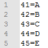
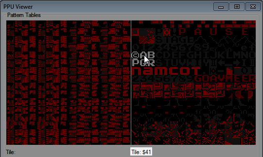

=======
Вернуться на главную страницу
=======
Вернуться на главную страницу
=======
Вернуться на главную страницу
Содержание
Table file (таблица кодировки) - текстовый файл с расширением .tbl, в котором хранится информация о том, как именно нужно отображать байты текстом. Содержимое файла выглядит как "байт" + "=" + "символ". Каждый байт должен быть записан с новой строки.

В качестве символа после "=" могут быть цифры, строчные и заглавные буквы, и некоторые другие символы.
Старая версия эмулятора не поддерживает символы кириллицы. Кодировка файла должна быть ANSI.
Чтобы узнать какой байт в игре отвечает за какой символ, открой PPU Viewer во вкладке Debug, наведи курсор на нужный тайл, и номер этого тайла отобразится внизу рядом со словом Tile.

Довольно часто заглавные буквы английского алфавита начинаются с #$41, цифры с #$30, а пробел это #$20, поскольку такой формат соответствует основным видам кодировок.
В некоторых играх, которые переключают банки с тайлами, может быть несколько наборов символов под разными номерами, в зависимости от того, какой банк был подключен и в какую область он был подключен. В таком случае может понадобиться создание нескольких .tbl файлов под все эти ситуации.
Выяснив байты символов, записываешь их в свой файл. После символа "=" можно записывать лишь 1 символ, остальные будут игнорироваться. А если ничего не записывать, символ будет отображаться в Hex Editor'е как точка.
Для более удобного создания .tbl файла воспользуйся специальной программой, например Oriton, описание работы с которой будет на главной странице.
Подключив созданный файл в Hex Editor'е, ты изменишь отображение кодировки на свою, что неплохо помогает увидеть текст, который находится в игре.

Если в файл составлен некорректно, вылезет сообщение об ошибке с указанием того, на какой линии обнаружена первая ошибка. Предыдуший файл .tbl, если он был ранее загружен, будет выгружен из Hex Editor'а.
После подключения файла ты можешь пользоваться поиском по тексту, который будет учитывать твою кодировку, или просто просматривать область NES Memory, PPU Memory или ROM File в поисках текста. Это также упрощает ввод текста при переводе игр, если вводить текст в правую часть окна Hex Editor'а вместо ввода соответствующих байтов.
Если символ, который ты пытаешься ввести, не указан в файле .tbl, символ не будет введен. Добавь символ в файл, переоткрой его в Hex Editor'е и попробуй снова.
В файл можно добавлять собственные обозначения определенных байтов, используемых игрой при работе с текстом. Например, если байт #$F0 отвечает за перенос текста на новую строку, можно записать в файле F0=/, а затем записывать символ "/" при необходимости переноса дальнейшего текста на новую строку.